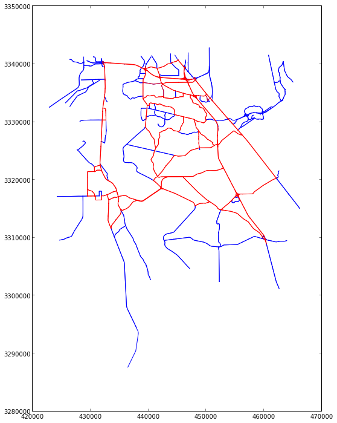
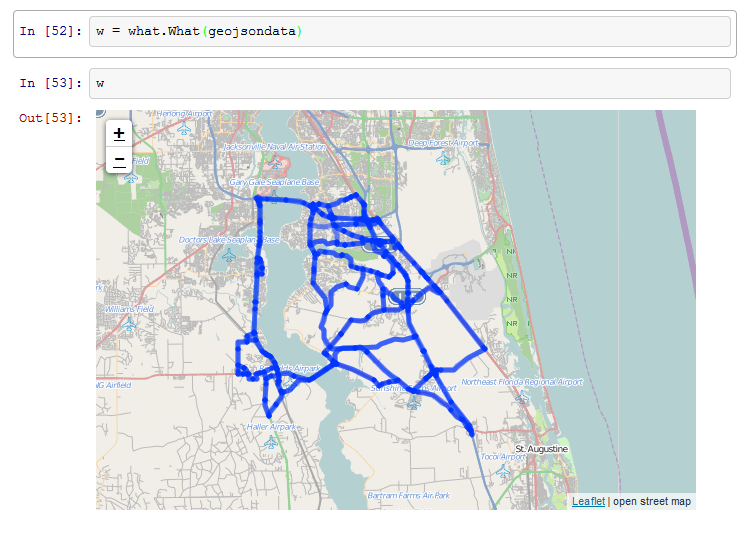
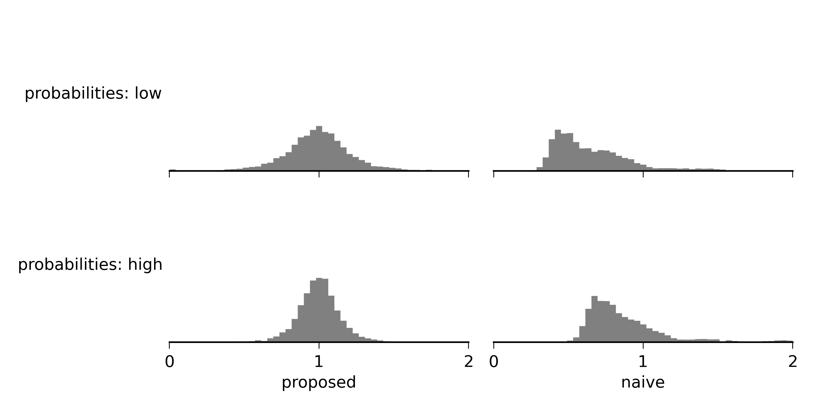

Why Another Web Map?
I recently launched my new web map at http://ericstalbot.pythonanywhere.com/. I’m pretty excited about it, but why do we need another web map when the internet already has so many very good ones?
I started working on the map back when I lived in Vermont, and it’s original purpose was very simple: to help me plan bike rides on the Green Mountain State’s beautiful back roads. I had tried to use the internet’s existing maps, but they didn’t work for me. So I decided to build my own map with a number of improvements:
- My new map shows trails and class 4 roads, which are unmaintained public right-of-way. They are usually unpassable to most vehicles but they are fun to ride and provide important connections between valleys.
- You can zoom way out on my map, and the smaller, less important roads never disappear. So you can zoom out far enough to plan a longer ride, but still see all the tiny dirt roads that you can piece together to make your ride fun.
- The map does not have distracting features like hill shading. The focus is on the roads, which makes it easy to see how roads connect to each other and make infinite possibilities for out-and-back and looping rides.
- The router on the map has no concept of “best”, or “fastest” path, so it does not force the path to follow the big roads, which often have too much traffic. Instead, it simply follows the least-distance path, which can produce some fun rides and help you see possible paths that you’ve never considered.
Go ahead and try the map out. In the meantime, I’ll be working on making it even better.
Viewing Spatial Data in IPython
I do a lot of geospatial analysis for my work in transportation. My usual workflow includes manipulating and analyzing data using IPython, and then viewing the data by creating matplotlib plots, like this one:

However, I frequently have found myself writing data to disk so I could explore it more interactively using QGIS. And more recently, I’ve been creating one-off HTML documents to view my data in slippy maps. Which got me thinking - how could you combine the great tools of Python and IPython with the ability to interactively explore data like you do in a desktop GIS or a web map?
Well, it turned out to be a lot easier than I expected. IPython is already set up to render objects as HTML. All you have to do is provide a _repr_html_ method which returns an HTML string. So I wrote a class that is initialized with a mapping in geojson format, and that has a _repr_html_ method that returns an HTML web map powered by Leaflet’s TileLayer and GeoJSON objects. So after about 30 minutes and 60 lines (including a HTML template) this is what I had:

Check out what on github.
spatialdigraph
NetworkX is a great Python package for working with networks. It sits right next to NumPy, matplotlib, and Shapely in my everyday transportation analysis toolbox. However, I’ve often wished that Networkx graphs had spatial capabilities. So that’s why I created spatialdigraph. Here’s how it works:
First, load a SpatialDiGraph of a highway interchange in New Hampshire:
g = cPickle.load(open('mygraph.pickle'))
This graph is in WGS84, so let’s transform to UTM for better drawing:
g.transform(fiona.crs.from_epsg(32617))
And now we can draw the graph:
fig, ax = plt.subplots(1,1)
g.draw(ax, node_args = {'s':0}, edge_args = {'c':'0.5'})
The SpatialDiGraph is a networkx.DiGraph subclass, so we have access to lots of useful methods from NetworkX. For example, we can get a shortest path on the network:
origin, destination = '194912632', '195049052'
path = networkx.shortest_path(g, origin, destination)
Then with the added functionality that the SpatialDiGraph provides we can draw the path:
x,y = g.xy(*path)
ax.plot(x,y, c = 'b', lw = 4)
And just to make it pretty, let’s also highlight the origin and destination nodes:
scatter_args = dict(zorder = 10, c = 'orange', s = 80, edgecolor = 'none')
x,y = g.xy(origin)
ax.scatter(x,y, **scatter_args)
x,y = g.xy(destination)
ax.scatter(x,y, **scatter_args)
Here’s the final result:

spatialdigraph is still a work in progress, but feel free to check it out on GitHub.
Bluetooth Vehicle Tracking: Correcting Short Trip Bias
A new thing in transportation analysis is the use of arrays of Bluetooth detectors to track cars. The detectors work by recording the MAC IDs of wireless devices inside cars that pass nearby. By linking together multiple detections of the same MAC ID across different detectors, you can make a pretty good guess at the starting point, ending point, and route taken for a trip.
There is one problem, however. Detectors can “miss” cars: even though a car has a wireless device inside, and it passes near a detector, the detector may fail to detect it. This has the effect of making some trips appear shorter than they really are. Take for example a car that passes near detectors 1, 2, and 3. If detector 1 misses the car, the trip will appear to have passed by only detectors 2 and 3.
To fix this problem, I’ve proposed an estimation method that explicitly accounts for missed detections. My tests show improvements over a naive method that ignores missed detections:
{kind=link}
See my paper and IPython notebook for details on the estimation method.